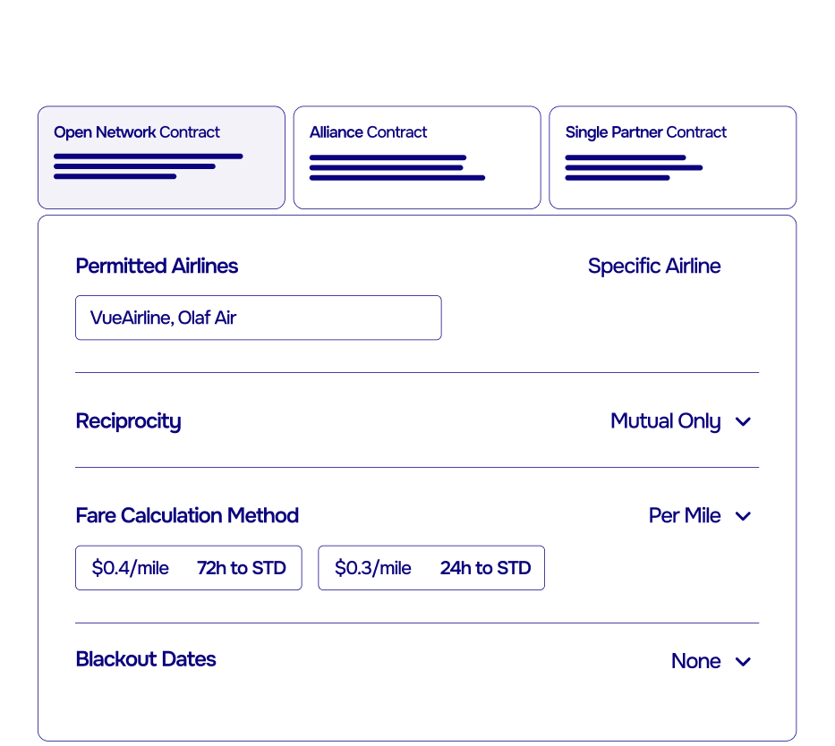
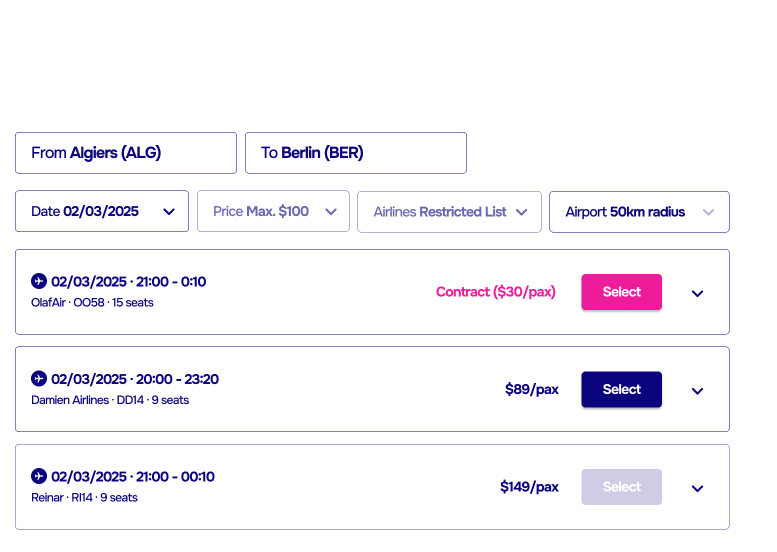
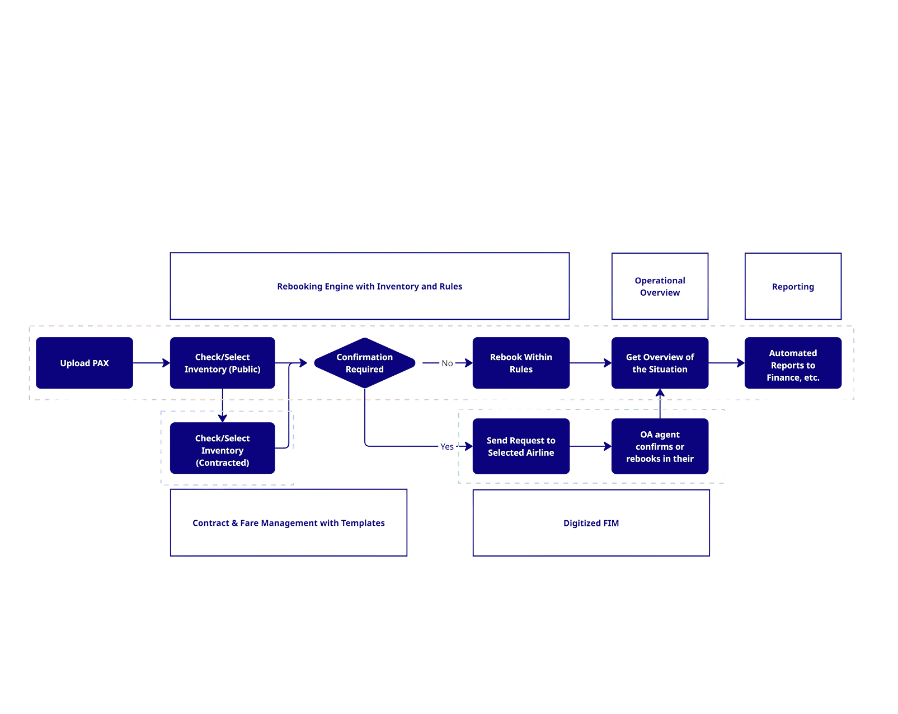
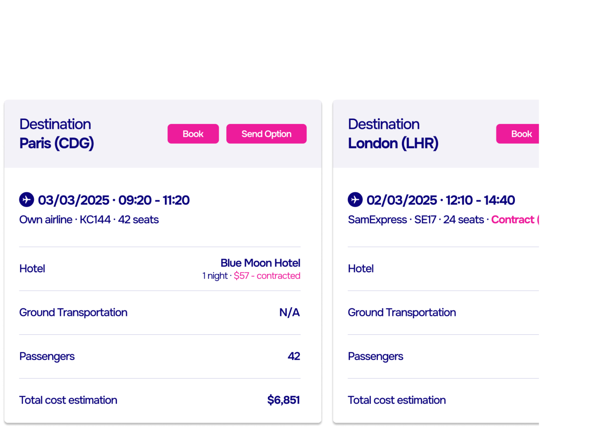
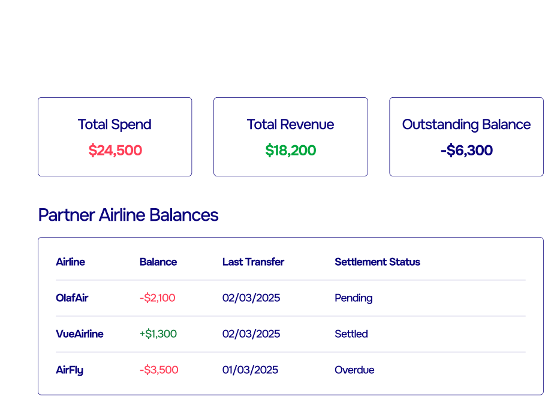

Biggest pain points
Rebooking with contracted fares is still manual and slow. Phone calls, emails, and CSV files make agreements impossible to apply in real time. Rule enforcement is inconsistent, and getting contracts in place is often a drawn-out, high-effort process.
- No access to live, bookable partner inventory
- Manual effort blocks contracted fares from being used effectively
- Hard to enforce cost limits, blackout dates, or carrier rules
- Fragmented visibility into bookings, spend, and settlement
Our vision
Rebooking that is fast, rules-driven, and financially controlled — with contracted fares applied instantly, not manually.
- Standardized contracts: agreements live in the system, ready to use
- Enforced rules: blackout dates and other carrier limits enforced
- Live inventory: real-time seat visibility and instant booking
- Decision support: AI recommendations balancing cost & satisfaction
- Balanced settlement: netting transactions over time with clear tracking
We’ve built working prototypes as part of this research, turning ideas into something you can experience.
If you’d like to explore them firsthand simply unlock the full research and we will reach out.
Plug and play partnership contracts
For commercial managers building disruption partnerships is often too complex to be worth it. Different systems, fare logic, and rules kill most deals before they start.
With standartized contracts partnerships become predictable, scalable, and low-effort. Cutting costs, boosting overbooking confidence, and turning contracts into a true operational tool.
- Simple: ready-to-use templates
- Sharable: e-signatures & online access
- Enforceable: rules like blackout dates or tiered pricing built in
- Instant: contracted fares available immediately after signing
Unlock the full research ↓


Smarter rebooking across airlines
When disruptions hit, operations managers face pressure to move hundreds of passengers fast — but fragmented tools, hidden inventory, and manual processes slow recovery down.
Our vision: a standardized, intelligent rebooking process that makes other-airline inventory not just visible, but bookable — with rules and contracts applied automatically.
- Integrated fares: book seats instantly with agreements enforced
- Dynamic control: pause or adjust availability in real time
- Automation: handle groups, not passengers one by one
- Compliance: every action logged, audit-ready
Unlock the full research ↓
Digital FIM workflow
Traditional FIMs are slow and manual — with no real-time visibility, limited tracking, and complex reconciliation that slows disruption recovery.
Our vision: a digital FIM that makes rebooking transparent, trackable, and fast.
- Centralized: upload passengers in bulk or via feeds
- Visible: see partner inventory in real time
- Automated: requests and approvals handled directly in-platform
- Collaborative: one interface replaces emails and spreadsheets
- Transparent: every step logged for compliance and settlement
The result: faster recovery, lower costs, and scalable adoption without heavy integrations.
Unlock the full research ↓


AI-powered decision support
Disruption recovery involves endless what-ifs that humans can’t solve fast enough. AI platform cuts through the noise, turning reactive firefighting into proactive, data-driven decisions.
It combines airline data and public sources to deliver not just options, but ranked, bookable recovery paths that fit policy, cost, and passenger needs.
- Discover options: flights, hotels, and ground transport
- Estimate impact: cost, arrival time, NPS effect
- Recommend: cheapest, fastest, or best-fit routes
- Simulate: test different recovery strategies in seconds
The result: faster recovery, smarter trade-offs, and predictable disruption outcomes at scale.
Unlock the full research ↓
Reconciliation and financial management
Replace inefficient single-transaction settlements with a smart balancing model. Through a virtual account, all disruption-related transactions are recorded and offset against each other in real-time. This means accounts are continuously balanced, and only the net financial position is settled at the end of the period, minimizing cash transfers and maximizing liquidity.
- Continuous balancing: Offsets inter-airline transactions in real-time to reduce cash flow.
- Net settlement: Settle only the net difference periodically to maximize your airline's liquidity.
- Audit-ready trail: Provides a complete transaction log for simple, compliant reconciliation.
- Integrated accounting: Connects to your finance systems for a hands-free, automated process.
Unlock the full research ↓
